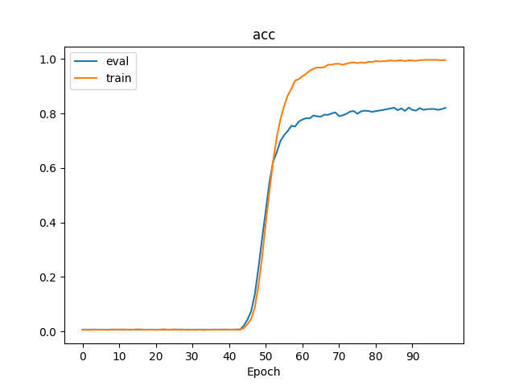
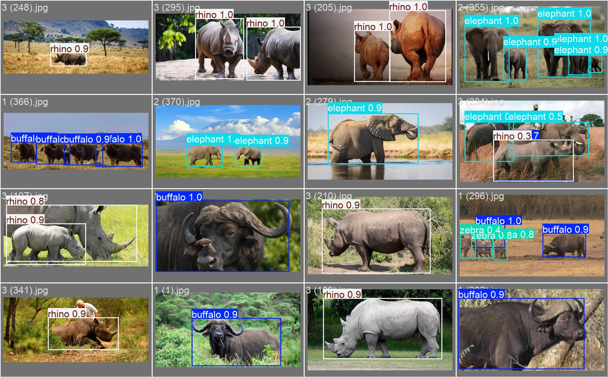

A collection of the five assignments from the National Taiwan University of Science and Technology MVC Lab (Multimedia and Computer Vision Lab) Spring 2025 course. Over one semester the topics start with classical machine learning, then move through convolutional neural networks, natural language processing, information retrieval, and close on object detection. This post organizes each assignment's topic, the model used, and the numbers it produced into one index. Every one has a verifiable metric and clears the course baseline on Kaggle or a dev set.
These five assignments line up into a miniature of the common deep learning tasks: HW1 uses the most basic machine learning to do two beginner Kaggle competitions; HW2 moves into images, building a convolutional neural network by hand to recognize the ten classes of small CIFAR-10 pictures; HW3 moves into text, doing intent recognition and slot tagging; HW4 does search ranking, a coarse pass first and a BERT fine pass after; HW5 does object detection, using YOLO to box African wildlife in photos. Walking the line end to end touches classification, sequence, retrieval, and detection once each.
# Overview of the Five Assignments
| HW | Topic | Framework / Model | Key Metric |
|---|---|---|---|
| HW1 | Kaggle: House Prices + Titanic Survival | scikit-learn | RMSE(log) 0.12615 / Acc 0.76555 |
| HW2 | CIFAR-10 CNN + Morphology Operations | PyTorch (3-layer Conv+BN) | Acc 0.8001 / F1 0.7997 |
| HW3 | Intent Recognition + Slot Tagging | BiLSTM + GloVe 840B.300d | Intent 0.822 / Slot F1 0.8021 |
| HW4 | BM25 + BERT Reranking (IR) | bert-base-uncased | Dev MAP@1000 34.40 / Private 0.41402 |
| HW5 | YOLO11n African Wildlife Detection | Ultralytics YOLO11n | mAP@0.5 0.9577 / 0.5:0.95 0.8018 |
# Breakdown by Assignment
HW1 — Two Beginner Kaggle Competitions
Two classic Kaggle competitions with scikit-learn: house price prediction (regression) and Titanic survival prediction (classification). The house price task is scored by RMSE in log space, landing at 0.12615; the Titanic task is scored by accuracy, landing at 0.76555. This one is the semester warm-up, getting the basic flow of data cleaning, feature processing, and cross-validation running smoothly.

HW2 — CIFAR-10 CNN and Morphology
A three-layer convolutional network (Conv + BatchNorm) built by hand, recognizing the ten classes of 32×32 CIFAR-10 images, accuracy 0.8001 and F1 0.7997, clearing the course baseline of 0.6397. It also does image morphology operations (erosion, dilation, and the like), and visualizes the feature maps of each intermediate layer to see the textures the convolutional layers actually learn.


HW3 — Intent Recognition + Slot Tagging
Two tasks trained together: judging the overall intent of a sentence (intent classification), and tagging the role of each word in the sentence (slot tagging). The model uses a bidirectional LSTM with GloVe 840B 300-dimensional word vectors. Intent accuracy is 0.822, slot tagging scored by entity-level F1 reaches 0.8021, and token-level accuracy reaches 0.9659.

HW4 — BM25 + BERT Two-Stage Ranking
An information retrieval task: given a query, rank the most relevant documents to the front. The flow splits into two stages: first a traditional BM25 coarse pass to pull the top 1000 documents from a large pool, then BERT for a fine pass over those 1000. The training format is "1 positive + 3 negatives" per item, a four-way choice, fine-tuned with bert-base-uncased.
The dev set MAP@1000 rises from 25.68 with BM25 alone to 34.40 with BERT added, a relative gain of 33.9%. When merging the coarse and fine passes, a grid search over 5000 weight combinations (step 0.001) finds the best weighting value of 3.399.
This one performs higher on the test set than on the dev set (Public 0.45446 / Private 0.41402, both above the dev equivalent), which means the ranking ability the model learned carries over to unseen queries, with no memorization of the dev set alone.
HW5 — YOLO11n Object Detection
Fine-tuning Ultralytics YOLO11n on the African wildlife dataset, boxing and labeling four animal classes in photos. Overall mAP@0.5 reaches 0.9577, and the stricter mAP@0.5:0.95 holds at 0.8018. The per-class mAP@0.5 for all four classes stands above 0.94:
| Class | mAP@0.5 |
|---|---|
| buffalo | 0.959 |
| elephant | 0.953 |
| rhino | 0.970 |
| zebra | 0.949 |


# Academic Integrity Statement
This repo is published as a personal learning record, to make it easy to look back later and to share the learning path. The repo holds none of the original starter code provided by the TAs; the HW4 baseline notebook is my own version with the five TO-DOs filled in, with the source noted. The datasets provided by the course (documents.csv, intent/slot json, and so on) are all left out, so obtain them through proper channels. MVC Lab students still taking the course should write it once themselves; the structure and approach are open for reference.
# Technical Environment
- Language — Python 3.10+ (3.10 / 3.11 recommended)
- Deep learning framework — PyTorch 2.x (used in HW2 / HW3 / HW4 / HW5)
- Per-week specific packages — scikit-learn (HW1), seqeval (HW3), HuggingFace Transformers (HW4), ultralytics (HW5)
- Hardware — a CUDA GPU is recommended but optional (CPU runs too, HW4 / HW5 training will be much slower)
- Not in the repo — model weights, original datasets, full training outputs; only the key training curves, PR / confusion matrices, and results.csv are kept
# Links
MIT License